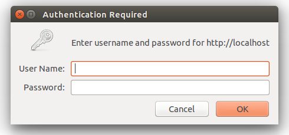

Además de todas las utilidades que incorpora Laravel y que podemos utilizar directamente sin instalar nada más, también nos permite añadir de forma muy sencilla paquetes para complementar su funcionalidad.
Para instalar un paquete tenemos dos opciones, utilizar el comando de composer:
sudo composer require <nombre-del-paquete-a-instalar>
O editar el fichero composer.json de la raíz de nuestro proyecto, añadir el paquete en su sección "require" y por último ejecutar el comando:
sudo composer update
Esta última opción es más interesante ya que nos permitirá una mayor configuración, por ejemplo, indicar la versión del paquete o repositorio, etc.
La lista de todos los paquetes disponibles la podemos encontrar en "https://packagist.org", en la cual permite realizar búsquedas, ver el número de instalaciones de un paquete, etc.
Algunos de los paquetes más utilizados en Laravel son:
Una vez añadido el paquete tendremos que modificar también el fichero de configuración app/config/app.php, en su sección providers y aliases, para que la plataforma encuentre el paquete que acabamos de añadir. Los detalles de configuración en general se encuentran indicados en la web o repositorio de GitHub de cada proyecto.
Por ejemplo, para instalar el paquete "Notification" de edvinaskrucas tendríamos que editar el fichero composer.json y en su sección require añadir la siguiente línea:
"edvinaskrucas/notification": "3.*"
Al añadir el paquete al fichero
composer.jsontenemos que llevar mucho cuidado de añadir una coma como separador excepto al final del último elemento.
Una vez añadido ejecutamos el siguiente comando para instalar el paquete:
sudo composer update
Y después de instalar tendríamos que editar el fichero app/config/app.php para añadir, en la sección providers, la siguiente línea:
'Krucas\Notification\NotificationServiceProvider'
Y en la sección aliases lo siguiente:
'Notification' => 'Krucas\Notification\Facades\Notification'
Con esto ya tendríamos instalada esta librería y podríamos empezar a utilizarla. Por ejemplo, para añadir una notificación desde un controlador podemos utilizar los siguientes métodos:
Notification::success('Success message');
Notification::error('Error message');
Notification::info('Info message');
Notification::warning('Warning message');
Y para mostrar las notificaciones, desde una vista (preferiblemente desde el layout principal), añadiríamos el siguiente código:
{{ Notification::showAll() }}
Laravel incorpora un tipo especial de controlador, llamado controlador de recuso (recource controller), que facilita la construcción de controladores tipo RESTful. Para esto simplemente tendríamos que usar el comando de artisan php artisan controller:make <nombre-controlador> para crear el controlador y añadir la ruta al fichero de rutas routes.php usando Route::resource.
Por ejemplo, para crear un controlador para la gestión de imágenes almacenadas en la aplicación, en primer lugar ejecutaríamos el siguiente comando:
$ php artisan controller:make PhotoController
Esto crearía el controlador PhotoController en la carpeta app/controllers. Lo único que nos faltaría es registrar las rutas asociadas añadiendo al fichero routes.php la siguiente línea:
Route::resource('photo', 'PhotoController');
Esta sola línea de ruta crea por si sola múltiples rutas para gestionar todos los tipos de peticiones RESTful. Además, el controlador creado mediante Artisan estará preparado con todos los métodos necesarios para responder a todos los tipos de peticiones. En la siguiente tabla se muestra un resumen de todas las rutas generadas, el tipo de petición a la que responden y la acción que realizan en el controlador:
| Verbo | Ruta | Acción | Controlador / método |
|---|---|---|---|
| GET | /photo | index | PhotoController@index |
| GET | /photo/create | create | PhotoController@create |
| POST | /photo | store | PhotoController@store |
| GET | /photo/{resource} | show | PhotoController@show |
| GET | /photo/{resource}/edit | edit | PhotoController@edit |
| PUT/PATCH | /photo/{resource} | update | PhotoController@update |
| DELETE | /photo/{resource} | destroy | PhotoController@destroy |
En ocasiones nos interesará declarar solamente un subconjunto de las acciones que soporta REST, para esto, al declarar la ruta tipo resource tenemos que añadir un tercer parámetro con la opción only (para que solo se creen esas rutas) o except (para que se creen todas las rutas excepto las indicadas), por ejemplo:
Route::resource('photo', 'PhotoController',
array('only' => array('index', 'show')));
Route::resource('photo', 'PhotoController',
array('except' => array('create', 'store', 'update', 'destroy')));
Además, a la hora de generar el controlador usando Artisan también podemos indicar de la misma forma que no nos genere todos los métodos:
$ php artisan controller:make PhotoController --only=index,show
$ php artisan controller:make PhotoController --except=index
Para "anidar" controladores de recursos se tiene que utilizar el punto "." como separador de los recursos en la declaración de la ruta, por ejemplo:
Route::resource('photos.comments', 'PhotoCommentController');
Esta ruta representaría que el recurso "comments" estaría anidado o contenido en el recurso "photos".
Las rutas generadas para este tipo de recursos siguen el siguiente patrón: photos/{photoResource}/comments/{commentResource}, donde se tiene que especificar el identificador de ambos recursos para poder acceder.
Los controladores asociados recibirían en este caso dos identificadores, primero el del recurso base y segundo el del recurso anidado:
class PhotoCommentController extends BaseController
{
public function show($photoId, $commentId)
{
//
}
}
Si queremos definir rutas adicionales para un controlador de recursos simplemente las tenemos que añadir al fichero de rutas routes.php antes que las rutas del propio recurso, por ejemplo:
Route::get('photos/popular', 'PhotoController@getPopular');
Route::resource('photos', 'PhotoController');
Para probar una API lo podemos hacer fácilmente utilizando el comando curl desde consola, el cual permite enviar peticiones de cualquier tipo a una URL, especificar las cabeceras, parámetros, etc.
Por ejemplo, para realizar una petición tipo GET a una URL simplemente tenemos que hacer:
$ curl -i http://localhost/recurso
HTTP/1.1 200 OK
Transfer-Encoding: chunked
Date: Fri, 27 Jul 2012 05:11:00 GMT
Content-Type: text/plain
¡Hola Mundo!
Donde la opción -i indica que se muestren las cabeceras de la respuesta.
Opcionalmente, al hacer la petición, podemos indicar las cabeceras con el parámetro -H. Por ejemplo, para solicitar datos en formato JSON tenemos que hacer:
$ curl -i -H "Accept: application/json" http://localhost/recurso
HTTP/1.1 200 OK
Date: Fri, 27 Jul 2012 05:12:32 GMT
Cache-Control: max-age=42
Content-Type: application/json
Content-Length: 27
{
"text": "¡Hola Mundo!"
}
Como hemos visto por defecto se realiza una petición tipo GET. Si queremos realizar otro tipo de petición lo tendremos que indicar con el parámetro -X seguido del método a utilizar (POST, PUT, DELETE). Además, con la opción -d podemos añadir los parámetros de la petición. Los parámetros tendrán que ir entre comillas y en caso de indicar varios los separaremos con &. Por ejemplo, para realizar una petición tipo POST con dos parámetros:
$ curl -i -H "Accept: application/json" -X POST -d "name=javi&phone=800999800" http://localhost/users
De la misma forma podemos hacer una petición tipo PUT (para actualizar datos) o tipo DELETE (para eliminarlos). Por ejemplo:
$ curl -i -H "Accept: application/json" -X PUT -d "name=new-name" http://localhost/users/1
$ curl -i -H "Accept: application/json" -X DELETE http://localhost/users/1
Para añadir más de una cabecera tenemos que indicar varias veces la opción -H, por ejemplo:
$ curl -i -H "Accept: application/json" -H "Content-Type: application/json" http://localhost/resource
$ curl -i -H "Accept: application/xml" -H "Content-Type: application/xml" http://localhost/resource
Por ejemplo, si queremos realizar una petición tipo POST que envíe código JSON y que también espere la respuesta en JSON tendríamos que indicar ambas cabeceras y añadir el JSON que queramos en los parámetros con i de forma normal:
curl -i -H "Accept: application/json" -H "Content-Type: application/json" -X POST -d '{"title":"xyz","year":"xyz"}' http://localhost/resource
Como resumen, las opciones más importantes de curl son:
| Opción | Descripción |
|---|---|
-i |
Mostrar las cabeceras de respuesta |
-H "header" |
Configurar las cabeceras de la petición |
-X <type> |
Indicar el método de la petición: POST, PUT, DELETE. Si no indicamos nada la petición será de tipo GET. |
-d "params" |
Añadir parámetros a la petición. Los parámetros tendrán que ir entre comillas "". Si queremos pasar varios parámetros utilizaremos como separador "&" |
Además de curl también podemos utilizar otro tipo de programas para probar una API. En Firefox y Chrome podemos encontrar extensiones que nos facilitarán este tipo de trabajo. Por ejemplo, en Firefox podemos encontrar Poster (https://addons.mozilla.org/en-US/firefox/addon/poster/). Una vez instalado lo podremos abrir desde Herramientas > Poster, y utilizarlo a través de una interfaz visual muy sencilla.
Para Chrome también podemos encontrar muchas extensiones si buscamos en su tienda (https://chrome.google.com/webstore/category/apps). Algunas opciones interesantes son "Advanced REST client" o "Postman - REST Client".
Laravel incluye métodos para transformar fácilmente el resultado obtenido de la consulta a un modelo de datos a formato JSON o a formato array. Esto es especialmente útil cuando estamos diseñando una API y queremos enviar los datos en formato JSON. Además, al realizar la transformación se incluirán los datos de las relaciones que se hayan cargado al hacer la consulta. Para realizar esta transformación simplemente tenemos que usar los métodos toJson() o toArray() sobre el resultado de la consulta:
$user = User::first();
$arrayUsuario = $user->toArray();
$jsonUsuario = $user->toJson();
También podemos transformar una colección entera de datos a este formato, por ejemplo:
$arrayUsuarios = User::all()->toArray();
$jsonUsuarios = User::all()->toJson();
En ocasiones nos interesará ocultar determinados atributos de nuestro modelo en la conversión a array o a JSON, como por ejemplo, el password o el identificador. Para hacer esto tenemos que definir el campo protegido hidden de nuestro modelo con el array de atributos a ocultar:
class User extends Eloquent {
protected $hidden = array('password');
// O también podemos indicar solamente aquellos que queramos mostrar:
//protected $visible = array('name', 'address');
}
Con lo que hemos visto en la sección anterior solo se realizaría la transformación a JSON, pero si queremos devolverlo como respuesta de una petición (por ejemplo, como respuesta a una petición de un método de una API), tendremos que utilizar el método Response::json, el cual además añadirá en la cabecera de la respuesta que los datos enviados están en formato JSON. Por ejemplo:
$usuarios = User::all();
return Response::json( $usuarios );
Este método también puede recibir otro tipo de valores (como una variable, un array, etc.) y los transformará también a JSON para devolverlos como respuesta a la petición:
return Response::json( array('name' => 'Steve', 'state' => 'CA') );
Si queremos especificar el código de la respuesta, por ejemplo cuando queremos indicar que ha sucedido algún error, podemos añadirlo como segundo parámetro, por ejemplo:
return Response::json( array('error'=>true, 'msg'=>'Error al procesar la petición' ), 500 );
La lista completa de los códigos que podemos utilizar la podéis encontrar en:
http://es.wikipedia.org/wiki/Anexo:C%C3%B3digos_de_estado_HTTP
Una opción interesante al incluir rutas en el fichero de rutas es poder agruparlas. Ya hemos visto esta opción para aplicar un determinado filtro a un grupo de rutas, pero también podemos utilizarlo para indicar un prefijo. Por ejemplo, si queremos que un grupo de rutas empiece por el prefijo api/v1 tendríamos que hacer lo siguiente:
Route::group(array('prefix' => 'api/v1'), function()
{
Route::get('recurso', 'Controller@getRecurso');
Route::post('recurso', 'Controller@postRecurso');
Route::get('recurso/{id}', 'Controller@putRecurso');
//...
});
El sistema de autenticación HTTP básica proporciona una forma rápida de identificar a los usuarios sin necesidad de crear una página con un formulario de login. Este sistema, cuando se accede a través de la web, automáticamente mostrará una ventana emergente para solicitar los datos de acceso:

Pero es más común su utilización para proteger las rutas de una API. En este caso las credenciales se tendrían que enviar en la cabecera de la petición.
Para proteger una ruta usando el sistema de autenticación básico simplemente tenemos que añadir el filtro llamado auth.basic a la ruta o grupo de rutas, de la forma:
Route::get('profile', array('before' => 'auth.basic', function()
{
// Zona de acceso restringido
}));
Por defecto, este filtro utiliza la columna email de la tabla de usuarios para la validación. En caso de querer utilizar otro campo tendríamos que editar el fichero de filtros app/filters.php y modificar el filtro auth.basic para pasarme como primer parámetro el nombre de la columna. Por ejemplo, si queremos utilizar la columna username tendríamos que hacer:
Route::filter('auth.basic', function()
{
return Auth::basic('username');
});
Una vez superada la autenticación básica se crea la sesión del usuario y en cliente se almacenaría una cookie con el identificador de la sesión. Si no queremos que la sesión se mantenga (por ejemplo, a través de una API queremos solicitar siempre el usuario y contraseña), simplemente tendremos que cambiar el filtro auth.basic por auth.once, el cual funciona exactamente igual pero sin persistir la sesión del usuario:
Route::filter('basic.once', function()
{
return Auth::onceBasic();
});
Si intentamos acceder a una ruta protegida mediante autenticación básica utilizando los comando de curl que hemos visto obtendremos el siguiente error:
HTTP/1.1 401 Unauthorized
Pero curl permite también indicar el usuario y contraseña añadiendo el parámetro -u o también --user (equivalente):
$ curl --user username:password http://localhost/recurso
$ curl -u username:password http://localhost/recurso
Si solamente indicamos el usuario (y no el password) se nos solicitará inmediatamente, y además al introducirlo no se verá escrito en la pantalla.
En esta sección de ejercicios vamos a terminar la web de gestión del videoclub añadiendo notificaciones, el funcionamiento de algunos botones que faltaban y por último, una API RESTful para el acceso externo.
En este primer ejercicio vamos a instalar una librería externa para mostrar las notificaciones de nuestra aplicación, para esto tenéis que seguir los pasos indicados en el apartado de teoría "Ejemplo: instalación de paquete de notificaciones".
Una vez instalado y correctamente configurado vamos a modificar los controladores para mostrar un aviso tipo success después de guardar y editar una película (la notificación se tendrá que añadir antes de realizar la redirección). Además también mostraremos una notificación de tipo error cuando se produzca un error en la autenticación del usuario.
Por último vamos a modificar la vista con el layout principal, situada en app/views/layouts/master.blade.php, para indicar que se muestren las notificaciones justo antes del contenido principal:
<div class="container">
{{ Notification::showAll() }}
@yield('content')
</div>
En este ejercicio vamos añadir la funcionalidad de los botones de alquilar, devolver y eliminar película. Todos estos botones están situados en la vista detalle de una película (el de eliminar lo tendremos que añadir). En todos los casos tendremos que crear una nueva ruta, un nuevo método en el controlador, actualizar el botón en la vista y mostrar una notificación después de realizar la acción. En la siguiente tabla se muestra un resumen de las rutas:
| Ruta | Tipo | Controlador / Acción |
|---|---|---|
| /catalog/rent/{id} | PUT | CatalogController@putRent |
| /catalog/return/{id} | PUT | CatalogController@putReturn |
| /catalog/delete/{id} | DELETE | CatalogController@deleteMovie |
En primer lugar tenéis que añadir las rutas al fichero routes.php y posteriormente modificar el controlador CatalogController para añadir los tres nuevos métodos. Estos tres métodos son similares al método que ya habíamos implementado antes para editar los datos de una película. En el caso de putRent y putReturn únicamente modificaremos el campo rented asignándole el valor true y false respectivamente, y una vez guardado añadiremos la notificación y realizaremos una redirección a la pantalla con la vista detalle de la película. En el método deleteMovie también obtendremos el registro de la película pero tendremos que llamar al método delete() de la misma, una vez hecho esto añadiremos la notificación y realizaremos una redirección al listado general de películas.
A continuación tenemos que editar la vista detalle de películas para modificar los botones (app/views/catalog/show.blade.php). Dado que la acciones se tienen que realizar usando peticiones HTTP tipo PUT y DELETE no podemos poner un enlace normal (ya que este sería tipo GET). Para solucionarlo tenemos que crear un formulario alrededor del botón y asignar al formulario el método correspondiente, por ejemplo:
{{ Form::open(array('method' => 'put', 'action'=>array('CatalogController@putReturn', $pelicula->id))) }}
{{ Form::submit('Devolver película', array('class' => 'btn btn-danger')) }}
{{ Form::close() }}
En este ejercicio vamos a crear una API tipo RESTful para permitir el acceso y gestión del catálogo del videoclub de forma externa. En la siguiente tabla se muestra el listado de todas las rutas que vamos a definir para la API:
| Ruta | Método | Filtro | Controlador / Método |
|---|---|---|---|
| /api/v1/catalog | GET | APICatalogController@index | |
| /api/v1/catalog/{id} | GET | APICatalogController@show | |
| /api/v1/catalog | POST | auth.once | APICatalogController@store |
| /api/v1/catalog/{id} | PUT | auth.once | APICatalogController@update |
| /api/v1/catalog/{id} | DELETE | auth.once | APICatalogController@destroy |
| /api/v1/catalog/{id}/rent | PUT | auth.once | APICatalogController@putRent |
| /api/v1/catalog/{id}/return | PUT | auth.once | APICatalogController@putReturn |
Por lo tanto, tendremos que definir todas las rutas RESTful para el catálogo, además de dos especiales: /rent y /return.
Todos los métodos estarán protegidos con contraseña a excepción de index y show que serán públicos.
Tenéis que comprobar que las rutas y filtros sean los correctos usando el método de Artisan php artisan routes.
Pista: para poder aplicar un filtro solamente a algunos de los métodos del controlador tendréis que separar la declaración de las rutas. Para esto podéis utilizar el tercer parámetro con las opciones
onlyyexcept.
A continuación tenéis que añadir el nuevo controlador APICatalogController (usando el comando de Artisan) y completar sus métodos. Las acciones y contenidos de estos métodos serán muy similares a los de CatalogController, pero teniendo en cuenta que no tendremos que devolver una nueva vista sino directamente el contenido de la consulta en formato JSON, por ejemplo, el método que devuelve el listado de todas las películas sería simplemente:
public function index()
{
return Response::json( Movie::all() );
}
Para devolver una respuesta en los métodos que realizan alguna acción (por ejemplo para indicar que la película se ha modificado correctamente o si ha habido algún error de validación) podemos realizar lo siguiente:
public function putRent($id)
{
$m = Movie::findOrFail( $id );
$m->rented = true;
$m->save();
return Response::json( array('error' => false,
'msg' => 'La película se ha marcado como alquilada' ) );
}
Por último, utiliza curl para comprobar que todas las rutas que has creado funcionan correctamente. Recuerda que para enviar
curl -i -H "Accept: application/json" -H "Content-Type: application/json" -X PUT -d '{"title":"nuevo titulo"}' http://localhost/catalog/21
Aviso: hemos de tener cuidado con el método de actualizar los datos de una película, ya que los campos que no se envíen se asignarán como vacíos. Para solucionar esto podemos actualizar solamente los campos que contengan algún valor o enviar siempre todos los campos.